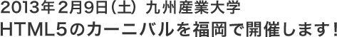

概 要

HTML5は「新しい技術を試してみよう」という時期を経て、いよいよ「使いこなさないとヤバイ」という段階を迎えようとしています。
そんなHTML5関連技術のトップランナーの方々をお招きし、昨年、神奈川で開催された「HTML5 Conference 2012」に負けないくらい熱を帯びたイベントを、ここ福岡で開催致します。
- ◆開催日
- 2013/02/09（土）
- ◆会 場
- 九州産業大学
- ◆主 催
- HTML5+α@福岡、html5j.org
- ◆ネットワーク提供協力
- 九州通信ネットワーク株式会社、株式会社フルノシステムズ
- ◆公式ハッシュタグ
- #html5carnival